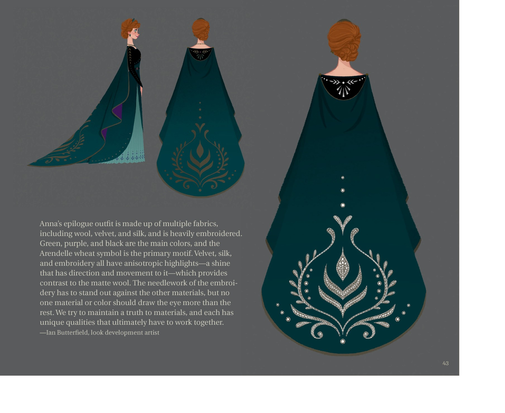
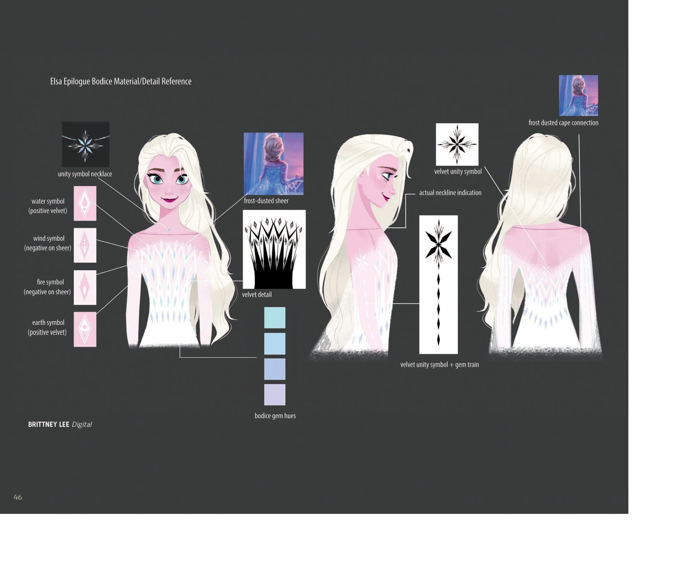
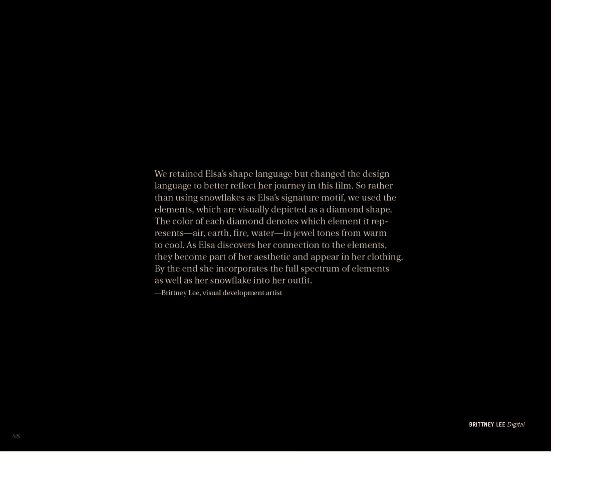
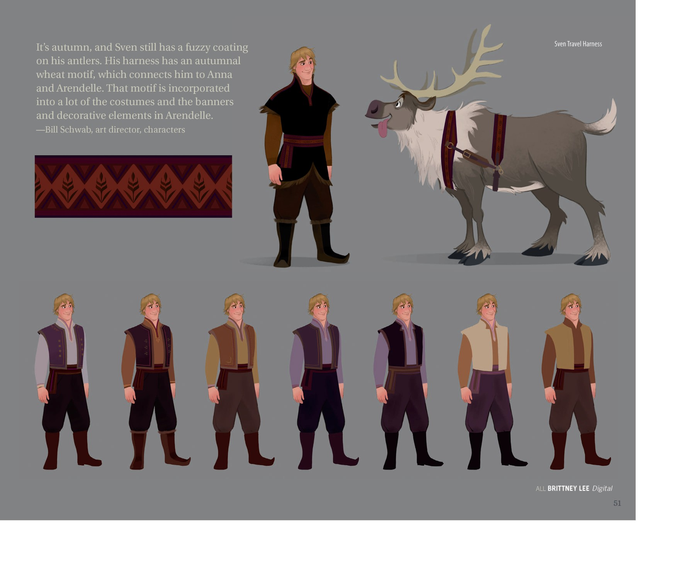
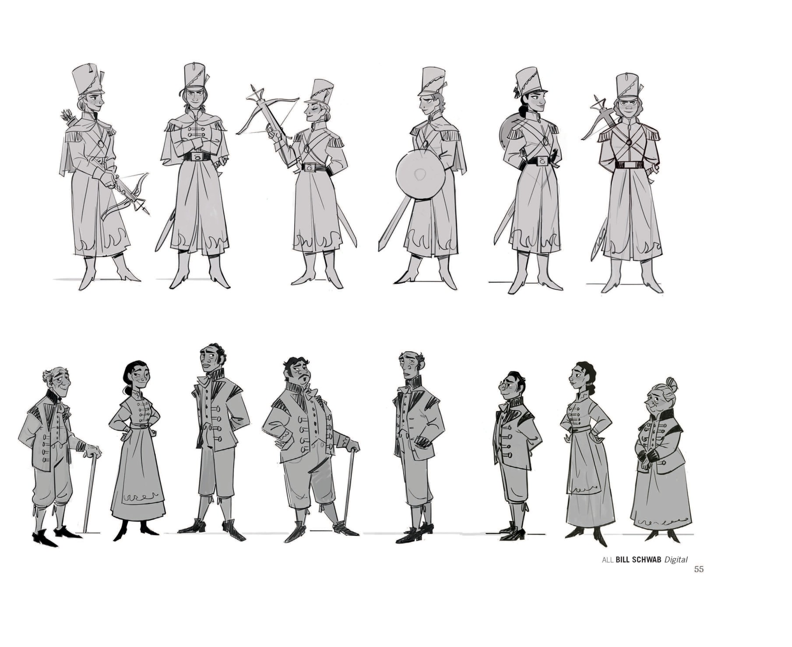
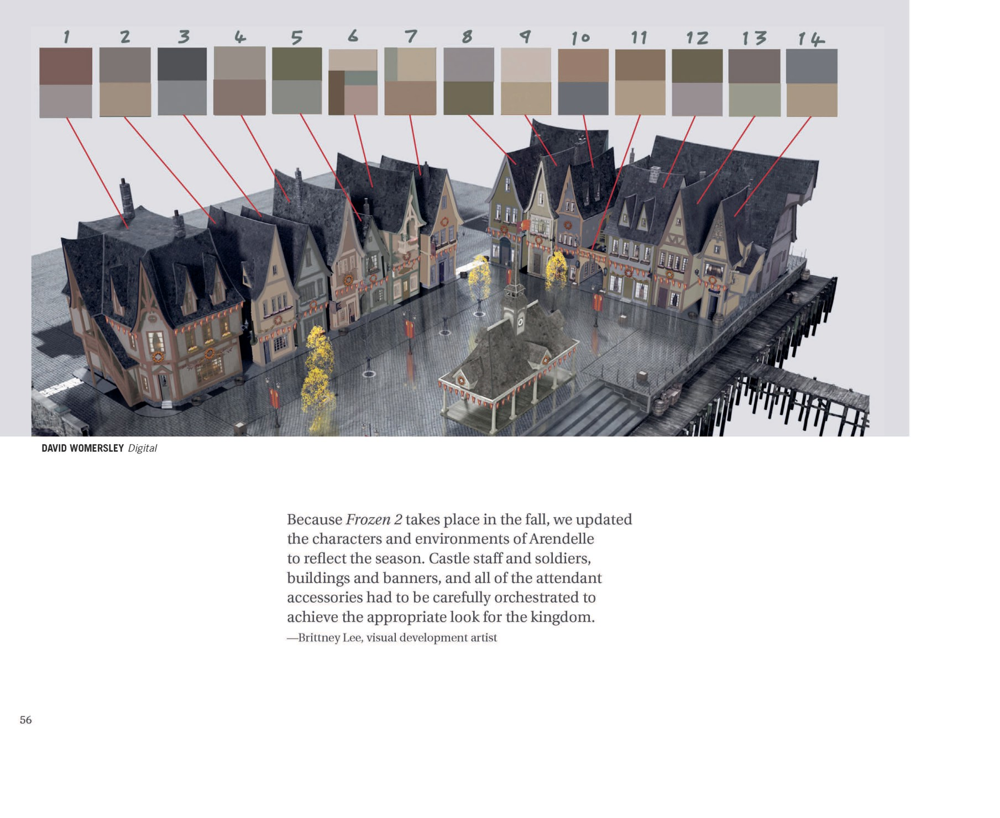
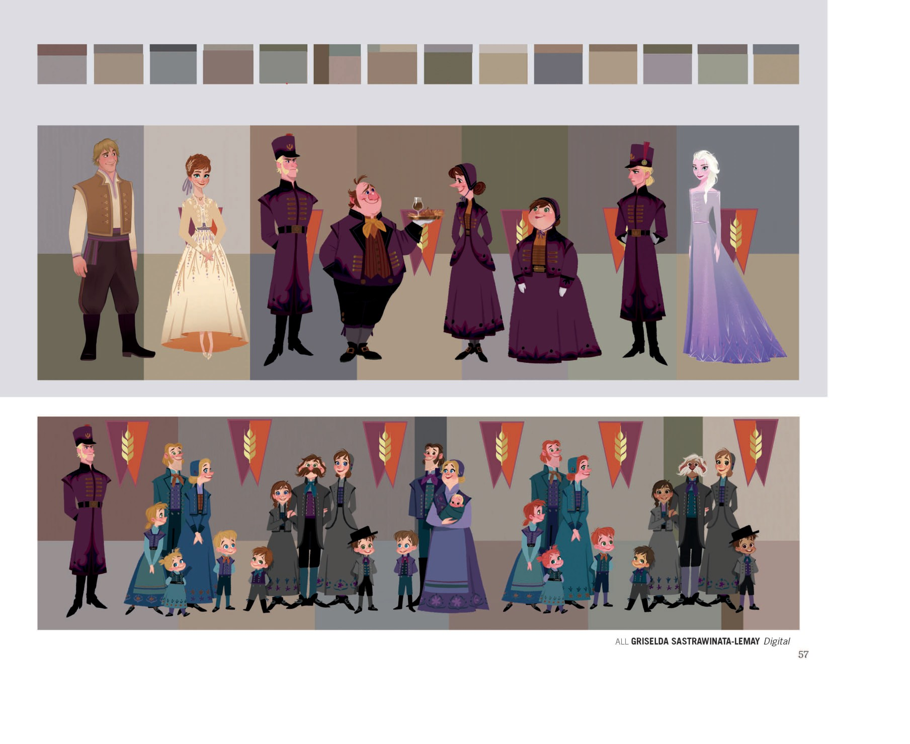

📖 设定集 · F2设定集
F2 图版 · 姐妹造型与服装（下）
F2 官方设定集图版 · p046–p061
5
本卷页数
🎨
设定集
中/英
双语
🖼️ F2 官方设定集 · 原书图版
F2 图版 · 姐妹造型与服装（下）
《The Art of Frozen II》（Jessica Julius, Chronicle Books 2019） p046–p061
15
图版
p046–p061
原书页码
原书
扫描原图
笔记
逐页图注
👑 姐妹的终幕（Epilogue）造型、订婚戒指、Kristoff & Sven 的秋季造型与麦穗纹样、雪宝的「When I Am Older」分镜，以及 Arendellians 王国居民群像。
🧵 终幕造型 · Kristoff & Sven · Olaf · Arendellians（p046–p061）

Anna 订婚戒指设定 + Kristoff/Anna 加冕服设定
Anna 订婚戒为橙钻+黄/白金镶嵌，灵感来自 Frozen 2 通用的番红花与小麦纹样；想象是地精为 Kristoff 挖出橙钻，因橙钻稀有且色泽近似 Anna 浓郁的赤褐发。Kristoff 加冕服采用深色军装风格；Anna 加冕礼裙为紫黑披风+蓝绿裙摆+金麦穗点缀。（F2设定集原页）

章节待考（Anna 终幕披风背面设定）
Anna 终幕服由羊毛、天鹅绒、丝绸等多种面料组成，刺绣繁复；主色为绿、紫、黑，主纹样是 Arendelle 麦穗；天鹅绒、丝绸、刺绣都有各向异性高光（带方向感的光泽），与哑光羊毛形成对比；刺绣的针脚要突出但不能压过其他材料；保持材质真实感，让每种材料的独特质感和谐共存。（F2设定集原页）

章节待考（Elsa 终幕造型）
Elsa 终幕装标志她的最终蜕变：裙身为白丝绒，呼应冰雪本源；斗篷与裙摆大量欧根纱体现她的魔幻缥缈；曲线胸衣剪影体现新获得的自信；装饰图案融合四元素（四大元素）的图形语言，象征她与自然深刻的联结。（F2设定集原页）

Elsa Epilogue（终幕造型）+ 元素宝石色调与"统一雪花"符号
四大元素以菱形宝石符号表示，色调由暖到冷；"统一雪花"是 Elsa 与自然联结的视觉化身——她是四大元素的源头；Elsa 终幕装多版造型展示了元素色调的融入。（F2设定集原页）

章节待考（Elsa 终幕胸衣材质/细节参考）
Elsa 终幕胸衣材质细分：水/土符号为正天鹅绒，风/火符号为透明面料上的负形；统一符号作为项链与背/裙摆装饰；胸衣宝石色按四元素配色；披风与衣身有"霜粉"连接。（F2设定集原页）

章节待考（Elsa 终幕披风与发型设定）
终幕 Elsa 的披风平面展开图（含缝线与魔法纹路走向）；发型保留长金发披肩；裙摆末端五种宝石色变体对应不同元素/场景。（F2设定集原页）

Elsa Epilogue（设计理念纯文字页）
保留 Elsa 的形态语言，但改变设计语言以更好反映本片旅程——以元素（菱形宝石）取代雪花成为她的标志；每颗菱形代表 air/earth/fire/water 四元素，色调由暖到冷；随着 Elsa 探索与元素的联结，元素融入她的审美与服饰；终幕装同时呈现完整元素光谱与雪花。（F2设定集原页）

章节待考（Elsa Final Epilogue Outfit）
Elsa 终幕造型的最终全身呈现；水印非书籍内容。（F2设定集原页）

"KRISTOFF AND SVEN" 角色造型页
Kristoff 服装使用秋季调色板呼应 Arendelle；麦穗与鹿角符号常出现在他的衣服上；本片他换装次数最多；终幕造型是为了搭配 Anna 终幕装——两人站一起很相配；"他打扮起来很帅！"（F2设定集原页）

Kristoff & Sven 秋季造型 + Arendelle 麦穗纹样
秋季，Sven 鹿角仍有绒毛层；Sven 挽具带秋季麦穗纹样，呼应 Anna 与 Arendelle；该纹样广泛出现在 Arendelle 服饰、旗帜与装饰中。Kristoff 提供多款配色实验。（F2设定集原页）

"OLAF" 角色章节起始页
在魔法森林中 Olaf 独自游荡，遇到元素精灵；观众能看到精灵的作为（土巨灵扔巨石、火在树间跳跃），但还看不到精灵本体；它们在观察而非攻击 Olaf，但有些瞬间看着吓人且十分怪异；Olaf 一头雾水，不知道该不该害怕——他耸耸肩，心想"等我长大就懂了"。（F2设定集原页）

Arendellians 章节（角色群像/王国居民）
Elsa 当女王开城门后，世界各地的人到访/移居 Arendelle，使王国更国际化、多元化。Bill Schwab 角色设计呈现多元文化背景的居民立绘。（F2设定集原页）

"Arendellians" 章节内页（士兵与平民造型）
阿伦黛尔皇家卫兵与平民的多样造型设计。（F2设定集原页）

"Arendellians" 章节内页（城堡广场配色）
因《Frozen 2》发生在秋季，更新了阿伦黛尔的角色与环境以反映季节；城堡卫兵、士兵、建筑、旗帜与所有配件需细致统一协调，以呈现王国正确的视觉面貌；广场上每栋房屋用不同灰/棕/绿色调搭配，呼应秋季调色板。（F2设定集原页）

Arendellians 章节（加冕/欢庆场景群像）
Arendelle 加冕/庆典场景的群像构图。Kristoff、Anna、Oaken 一家（Oaken 夫人、Oaken 持蛋糕）、多位 Arendelle 市民与 Elsa 共聚一堂，背景串起红底金麦穗三角旗。（F2设定集原页）
💡 图注说明
本页全部图版为《The Art of Frozen II》（Jessica Julius, Chronicle Books 2019）原书扫描（原图复制，未压缩），图注（中文标题 + 要点首句）逐页取自官方设定集中文笔记，点击图片可查看原尺寸扫描。
📌 本页要点
你正在阅读《设定集》卷的「F2 图版 · 姐妹造型与服装（下）」。本页由电影正典、官方设定集与官方小说综合梳理，可作为该主题的速查入口；右侧目录可快速跳转到本页各小节。